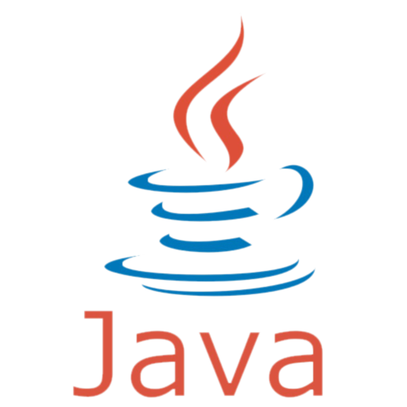

Moje Projekty
Tutaj znajdziesz listę projektów, nad którymi pracowałem z pasją i zaangażowaniem. Każdy z tych projektów jest wyrazem mojej fascynacji technologią i kreatywnością. Zachęcam do zapoznania się z poniższą listą, gdzie prezentuję różnorodne projekty, na których miałem okazję pracować.
Zapraszam do zapoznania się z moimi projektami, które są ukoronowaniem mojej pasji do technologii oraz świadectwem ciągłego dążenia do doskonalenia się. Dziękuję za zainteresowanie i ciekawość!
Wizualizacja danych przy użyciu Pythona

|
Celem projektu było zapoznanie się z językiem Python i środowiskiem Google Colab oraz, oczyście, zaliczenie przedmiotu Wizualizacja Danych.
Projekt przedstawia cały proces uzyskiwania specyfikacji procesorów od różnych producentów z nawet 10 lat wstecz i porównywane są pod różnymi aspektami. Wykonane zostało również zestawienie kart graficznych użytkowników platformy Steam. Uzyskane zestawienia mogą być dla wielu interesujące.
Sam projekt znajduje się tutaj.
Kompresja Huffmana

Celem tego projektu było zapoznanie się oraz zaimplementowanie kompresję Huffaman dla plików tekstowych (Algorytmy i Struktury Danych).
Kodowanie Huffmana wykorzystuje specyficzną metodę wybierania reprezentacji dla każdego symbolu, co skutkuje kodem prefiksu (czasami nazywanym "kodami bez prefiksów").
Można kliknąć tutaj dla więcej informacji na ten temat.
Jeszcze więcje?

|

|
 |
No dobra. Jeśli chcesz zobaczyć więcej moich wypocin w różnych językach programowania zapraszam na mojego githuba.